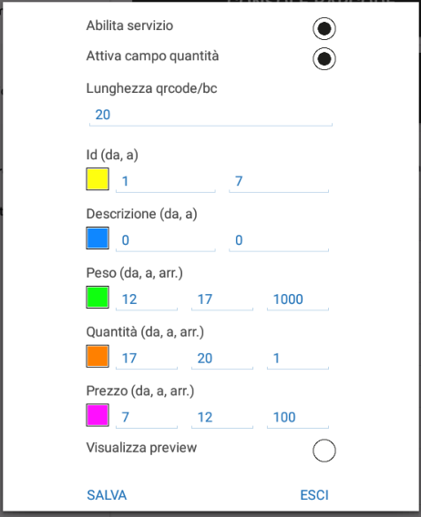
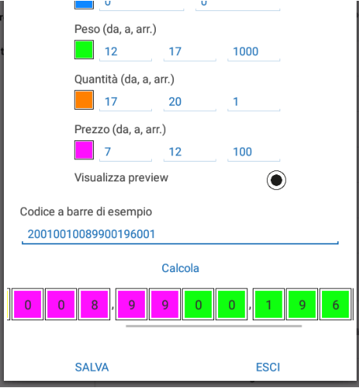
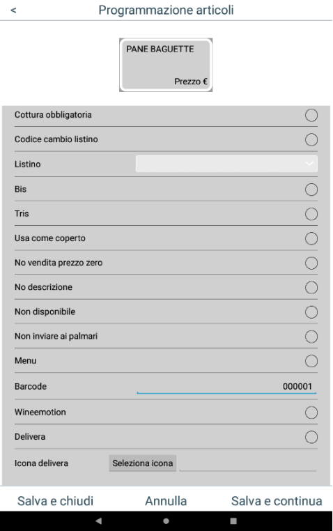

Configurazione KeepUp Smart
Configurazione "barcode dinamici"
- Dalla schermata di vendita premere il tasto "Back", poi entrare nella sezione "Impostazioni".
- Nella pagina "Opzioni programma" premere il pulsante "BARCODE DINAMICI".
- Nella schermata di configurazione che apparirà, inserire i parametri come mostrato.

| Parametro | Valore |
|---|---|
| Abilita servizio | Attivo |
| Attiva campo quantità | Attivo |
| Lunghezza qrcode/bc | 20 |
| Id (da, a) | 1 – 7 |
| Descrizione (da, a) | 0 – 0 |
| Peso (da, a, arr.) | 12 – 17 – 1000 |
| Quantità (da, a, arr.) | 17 – 20 – 1 |
| Prezzo (da, a, arr.) | 7 – 12 – 100 |
Verifica con "Visualizza preview"
Se lo si desidera è possibile abilitare "Visualizza preview" e usare il campo di testo che apparirà per effettuare una prova di lettura del QR Code con lo scanner, verificando che venga correttamente visualizzato con i colori e i decimali.

Al termine confermare premendo "SALVA".
Configurazione articoli
Ogni articolo programmato in bilancia deve esistere negli archivi di KeepUp Smart, anche se potrà avere un prezzo unitario errato o non aggiornato rispetto alla bilancia.
Anagrafica gestita da KeepUp Smart
Se l'anagrafica viene gestita in cassa e trasmessa alle bilance, il barcode dell'articolo viene proposto automaticamente nel formato idoneo alla lettura del QR Code: vedi Generazione automatica del barcode.
PLU programmati direttamente in bilancia
Se i PLU sono programmati sulla bilancia, occorre riportarne i codici negli articoli di KeepUp Smart. Per fare questo bisogna avere i codici PLU di ogni prodotto presente in bilancia (è possibile usare l'apposita funzione in bilancia per ottenere la stampa di tutto il suo archivio PLU).
- Dalla schermata di vendita premere il tasto "Back", poi entrare nella sezione "Archivi" e quindi nella programmazione "Articoli".
- Dalla lista a sinistra selezionare un articolo e premere il bottone "Modifica", oppure creare un "Nuovo articolo" se necessario.
- Inserire come di consueto la descrizione e il reparto (per l'IVA associata), dopodiché aprire le opzioni avanzate con il tasto freccia verso il basso.
- Spostarsi alla voce "Barcode" e scrivere 6 numeri che rappresentano il codice PLU in bilancia.
- Premere "Salva e continua" per inserire il PLU successivo oppure "Salva e chiudi".
Esempio
Per il PLU 1 inserire 000001.
